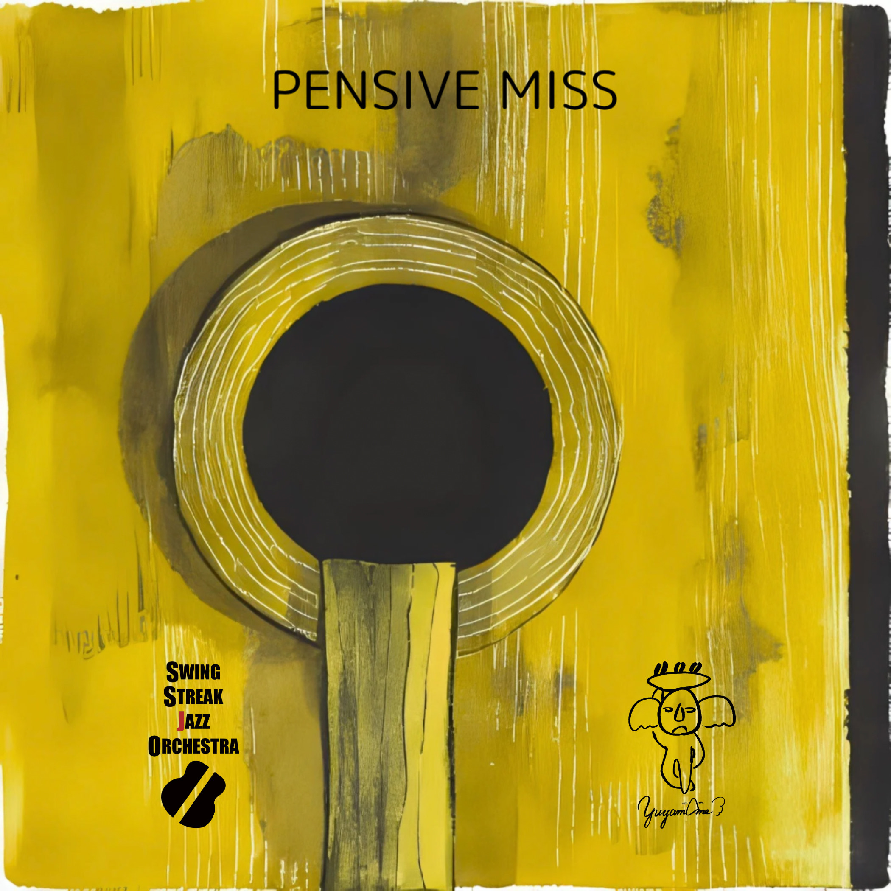

このコーヒー豆は、
作り手の想いを込めて丁寧に焙煎されました。
土の香り、陽の光、収穫の手の温度――
ひと粒ずつに詩のような記憶が詰まっています。
そして、今日のあなたの時間を彩るのは「Pensive Miss」。
誰かを想う静かな午後、心の奥に静かにしみ込むような旋律。
93℃のお湯を注ぐとき、立ちのぼる湯気に香りを感じてみてください。
音と香りが、今だけの物語を奏でます。
👉 深呼吸して、「再生」ボタンを押してみてください。

Pensive Miss
Your browser does not support the audio element.